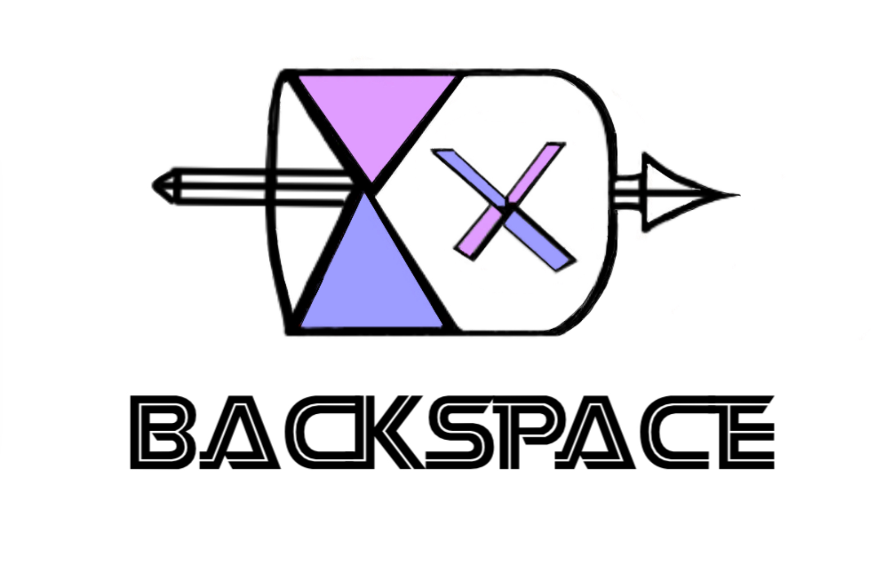

Hello all Podcast Listeners!
WELCOME TO THE BACKSPACE PODCAST HOMEPAGE

OUR MISSON:
To compile an audience of students from different schools to explore differences in education and high school development and to help students discover potential careers paths and their interests, dually functioning as a free educational podcast for those who don’t have access to great advice or counselors.
Click here to find out more!
ABOUT OUR HOSTS:
This podcast is run by two highschoolers looking to provide clarity to highschoolers seeking advice from a fellow highschooler as we progress through the years and eventually decide future carrer paths. Click here for our bios!